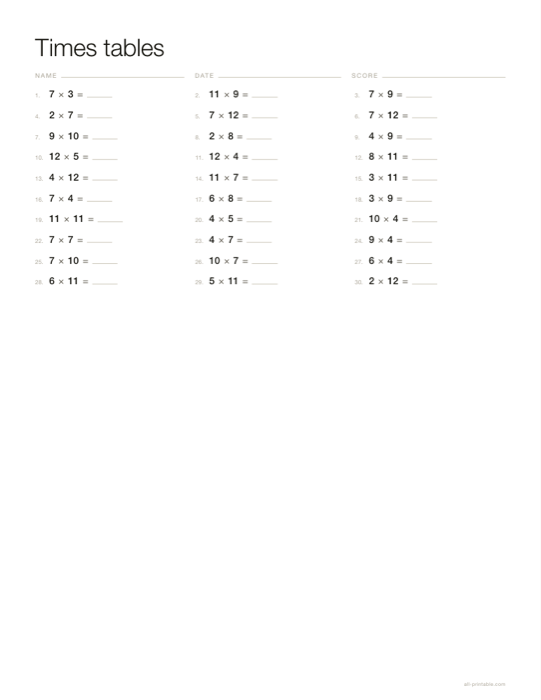

Drill sheets with a separate answer key, plus the classic multiplication grid blank or filled. Multiplication, addition, subtraction and division, alone or mixed, with the number ranges you choose.
Open the maker Free · no sign-up · nothing uploaded

| Operations | 4 |
|---|---|
| Problems | Up to 200 |
| Answer key | Yes |
| Grid | Up to 20×20 |
Choose Print, then pick Save as PDF as the destination if you want a file. Set scale to 100% and margins to None — the sheet already carries its exact paper size, so the browser must not rescale it. Anything else and the dimensions you chose are no longer the dimensions on the page.
Never. A divisor and a quotient are chosen and multiplied to get the dividend, so every division is exact.
Yes, and it prints a completed grid as the answer key.